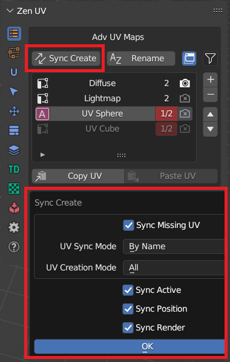
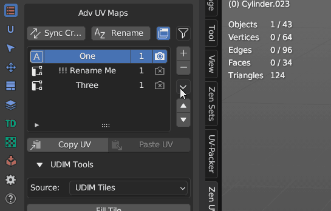
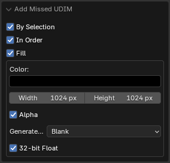

Advanced UV Maps
Advanced UV Maps section created to have quick access to Object Data Properties — UV Maps. It allows to select the active, add, remove, and rename UV Maps from the list.
If more than one object is selected, you can synchronously work with UV maps of the selected objects.
Panel
| Edit Mode | Object Mode |
|---|---|
 |
 |
Advanced UV Maps List
The list can work in two modes: - Multi object mode - Single object mode
| List Description |
|---|
 |
| List Color | Individual for every column |
|---|---|
| Default color | All selectected objects has the same active UV Map, render, same position in the list |
| Red color | At least one object differs with one of the UV Map parameters |
| 1. Active UV Map status | |
|---|---|
| UV Map is active | |
 |
UV Map is not active |
| 2. UV Map name | |
|---|---|
| Name is highlighted | All selected objects have UV Map with the name |
| Name is grayed out | At least one object from selection does not have UV Map with the name |
| 3. UV Map count and position status | |
|---|---|
| First or single digit | Number of objects that have UV Map with the selected name |
| Second digit | Selected objects count |
| 4. Active Render UV Map status | |
|---|---|
 |
UV Map is active for render |
 |
UV Map is not active for render |
UV Maps Status Detection
Advanced Maps system detects synchronization status of all UV Maps in the selected objects. It is possible to disable some parameters which are not neccessary for you to detect.
 |
|---|
Duplicate active UV Map
Duplicate the active UV Map or create a new one depending on the operator’s properties.

Remove active UV Map 

Rename UV Maps

| Rename Settings |
|---|
 |
| UV Maps source | |
|---|---|
| Selected | Operates on the currently selected UV Map items in the list |
| All | Operates on all UV Map items in the list |
| Options | |
|---|---|
| Find | The text to search for in names |
| 1) if text is empty then all name will be renamed | |
| 2) if ‘Use Regex’ is set then text must be a valid regular expression | |
| Replace | The text to replace for in matching names found from the ‘Find’ text |
| Match Case | Search results must exactly match the case of the ‘Find’ text |
| Use Regex | Replace by regular expression in the ‘Find’ text |
Generate UV Map names from template
If you have naming convension for UV Maps in your projects, you can create template preset and quickly rename all UV Maps in one click
| UV Map naming preset |
|---|
 |
Sync UV Maps 
If your model requires UV Maps to have the same postion, name, active or render status you can synchronize them

Copy UV / Paste UV
Allows transferring the UV coordinates between UV Maps.
Note
Available in Edit Mesh mode if geometry of selected objects is the same.
 |
|---|
Copy UV
Copy the UV coordinates of the selection.
Paste UV
Paste the UV coordinates.
Adv UV Maps Tools
Clean UV Maps
Remove all inactive UV Maps.

Set UV Map Name by Index
Set UV Map name by its Index in the list.

Transfer UV

| Transfer Modes | |
|---|---|
| Matching geometry | Objects must be of type mesh and must have a matching topology |
| Advanced | Transfer UV maps by generating an interpolated mapping between source and target mesh elements |
| Layout | Transfer layout of UV maps from active to selected meshes |
UDIM tools
UDIM workflow is a special workflow that allow to spread UV islands across several different textures of the model.
Note
Available only in UV Editor context in Edit Mode. The image Source must be set to ‘UDIM Tiles’.

Fill Tile
Fill the current tile with a generated texture.
Add Missed
Create the missing UDIM Tile at the Island location.

| Options | |
|---|---|
| By Selection | Use selection to determine where where UDIM tile will be created |
| In order | Create all the missing tiles in order until it reaches the last missed tile with the selection |
| Fill | Fill tile with settings below |
Set Active
Set the active UDIM Tile based on the selection.

Remove Active
Remove the active UDIM Tile.
Select in Active
Select Islands in bounding box of active UDIM Tile or UV Area.

Move to active
Move Islands to active or selected by number UDIM Tile.

Set Active
Set active UDIM Tile by eyedropper.